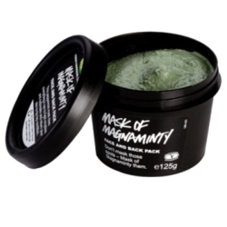
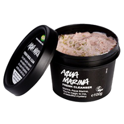
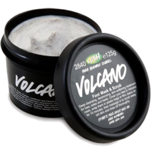

RUBY MASK
your smartest cheat in beauty and lifestyle
Variant Of Mask
 |
Mask of MagnamintyThis tingly, minty face and body mask was formulated to be intensely cleansing but never harsh or abrasive. Kaolin clay and peppermint oil rid your pores of debris, giving you a delightfully tingly clean sensation. We add loads of ground aduki beans to exfoliate flaky or dry skin, vanilla absolute to calm redness and honey to soothe and moisturize. |
Aqua MarinaThis creamy, gentle cleanser is designed to calm irritated, sensitive skin with skin-soothing ingredients like cooling aloe vera and lovely pink calamine powder in a cleansing kaolin clay base. We wrap it up in mineral-rich nori seaweed to nourish the skin and add a sprinkle of sea salt for a super gentle exfoliation. |
 |
 |
Volcano Foot MaskSlather on our thick kaolin and pumice foot mask to draw out deep down dirt and slough off rough skin for the softest soles ever. Full of fresh papaya and lemon juices to cleanse, as well as tomatoes, potatoes and cleansing essential oils to deodorize against odor, this mask will keep your feet smelling fresh. Cover your feet with our spicy cinnamon mask, put up your feet for ten minutes, then rinse off using the pumice blend to scrub off dry skin and you’ll be left with lovely, soft and smell-free feet. |